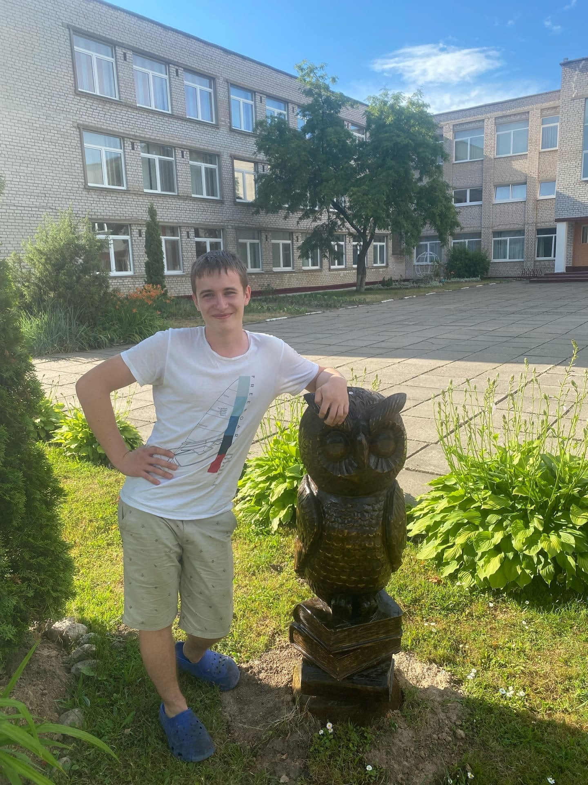

About me: Hello, I'm Max. I'm 20 yrs and a student of BSU faculty
of business, studying a bachelor degree on business administration. So,
what are my plans you can find interesting? Firstly, my goal right now
is to get a good knowledge of programming, that means getting first job
in IT field as a proof. I'm interested in learning js developer
profession. My strengths are being hardworking, consistent and
persistent.
Skills: At the time of writing, i'm lacking practical experience
but I have a good level of English, a foundation theory knowledge of
common tools and languages for js developer, like CSS, HTML, JS; tools
like Vue, Typescript, Git, Node(in progress).
Code example: Yet of now I can provide you with some code from
codewars:) Well, if you are interested you can also check my repo of
EPAM tasks I was
trying to make to go for an interview.
function multiply(a, b){
let s = a * b;
return s;
}
Work experience: As of now I am a student at RSS community. Date
of start was 5 of July.
Education: Idk if that counts, but I like reading documentation
from different useful tools like Babel, Webpack, Denu etc.
Languages: At the time of writing, My language levels are the
following: Russian, Belarusian — mother-tongue; English — C1, Chinese —
HSK4, Spanish — A1.